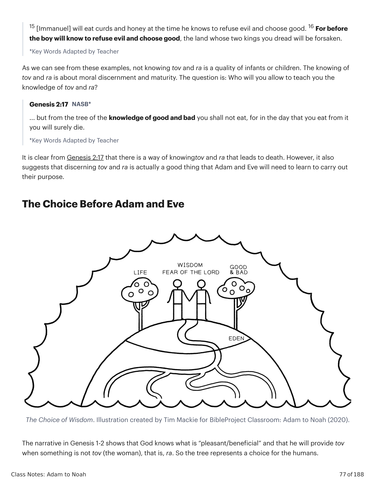
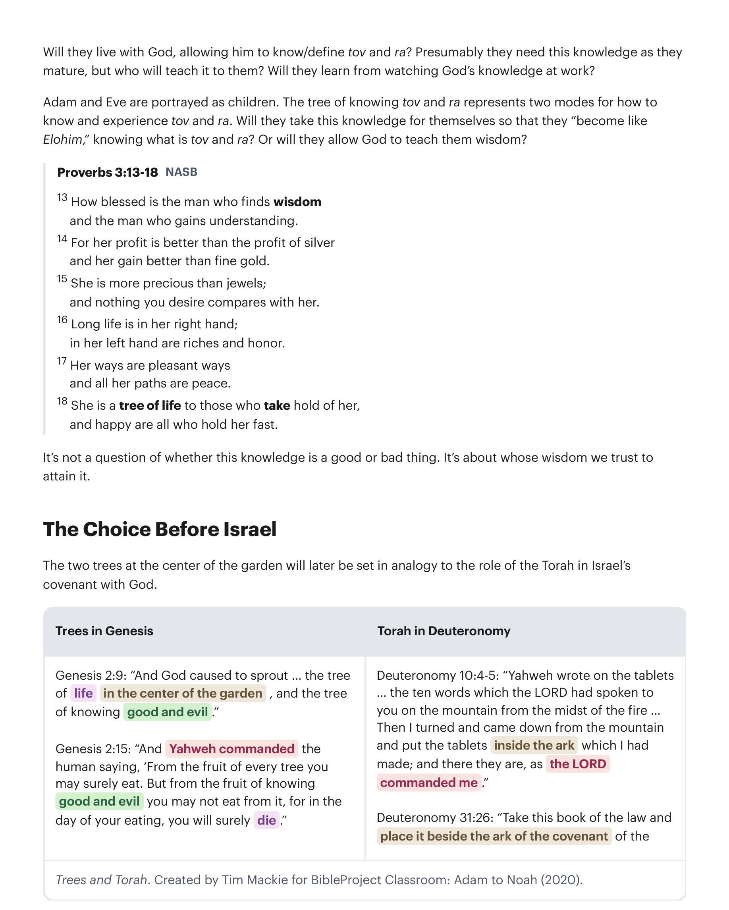
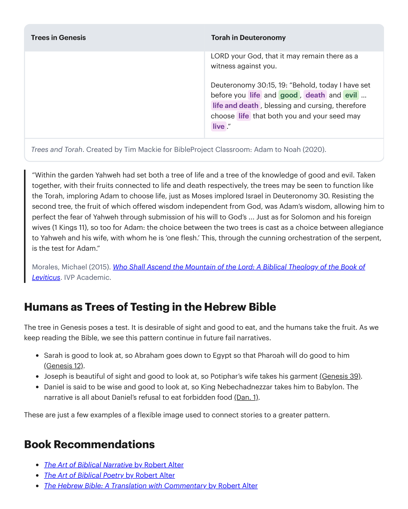

As árvores são introduzidas em Gênesis 2:9 e aparecem novamente em Gênesis 2:16-17.The trees are introduced in Genesis 2:9 and appear again in Genesis 2:16-17.
"[A árvore da vida] representa uma vida além da vida original que Deus soprou no humano. O primeiro humano por natureza é suscetível à morte ... No entanto, comer continuamente da árvore poderia renovar a vida e prevenir a morte. Além da desobediência ao comando de Deus, os mortais tinham acesso a esta árvore ... A árvore da vida permite à humanidade transcender sua mortalidade, o estado em que foi criada no sexto dia, para que possa mover-se a uma dimensão superior ... à vida eterna e imortalidade. Ao participar deste ... fruto pela fé, participa-se desta vida eterna. Esta mais alta potência de vida estava disponível no jardim e torna-se novamente disponível a nós à medida que reentramos no jardim-templo através do segundo Adão ... e aguardamos a ressurreição de nossos corpos.""[The tree of life] represents life that is beyond the original life that God breathed into human. The first human by nature is susceptible to death ... Nevertheless, continued eating from the tree could renew life and prevent death. Apart from disobedience to God's command, mortals had access to this tree ... The tree of life allows humanity to transcend its mortality, the state in which it was created on the sixth day, so it can move to a higher dimension ... to eternal life and immortality. As one partakes of this ... fruit by faith, one participates in this eternal life. This highest potency of life was available in the garden and becomes once again available to us as we reenter the temple-garden through the second Adam ... and look forward to the resurrection of our bodies."
Waltke, Bruce e Charles Yu (2007). An Old Testament Theology: An Exegetical, Canonical, and Thematic Approach. Zondervan.Waltke, Bruce and Chales Yu (2007). An Old Testament Theology: An Exegetical, Canonical, and Thematic Approach. Zondervan.
Este estado edênico é frágil e condicional à confiança e à vida pelo comando de Deus. Em Gênesis 1, Deus sozinho é o provedor e conhecedor do que é bom e não bom. Isto é, ele tem a sabedoria para saber o que é necessário para a humanidade cumprir seu papel como parceiros de Deus no "jardim" de toda a criação. Este papel dignificado para os humanos, no entanto, vem com uma grande responsabilidade e escolha. Eles aprenderão sabedoria de Deus, ou a tomarão para si mesmos?This Edenic state is fragile and conditional upon trusting and living by God's command. In Genesis 1, God alone is the provider and knower of what is good and not good. That is, he has the wisdom to know what is necessary for humanity to fulfill their role as God's partners in the "gardenizing" all of creation. This dignified role for the humans, however, comes with a great responsibility and choice. Will they learn wisdom from God, or will they take it for themselves?
No jardim "bom", há árvores carregadas de fruto para comer e cultivar, e no centro do jardim (de onde flui o rio) está a árvore da vida. É uma imagem do dom supremo de Deus para a criação — a oportunidade de compartilhar e receber a própria bondade e vida de Deus em si mesmo. Mas o acesso contínuo à árvore da vida é condicional a não tomar da árvore do conhecimento de tov e ra. O significado desta frase é importante para a lógica da narrativa, então devemos mergulhar profundamente no significado destas palavras-chave.In the "good" garden, there are trees loaded with fruit for eating and cultivating, and in the center of the garden (from which flows the river) is the tree of life. It's an image of God's ultimate gift to creation—the opportunity to share in and receive God's own goodness and life into oneself. But ongoing access to the tree of life is conditional upon not taking from the tree of knowing tov and ra. The meaning of this phrase is important for the logic of the narrative, so we must take a deep dive into the meaning of these key words.
Vejamos as palavras tov e ra na Bíblia Hebraica para desenvolver um retrato para nossa definição destes termos.Let's look at the words tov and ra in the Hebrew Bible to develop a portrait for our definition of these terms.
Jeremias 24:1-2 (NVI): "...o SENHOR me mostrou dois cestos de figos colocados diante do templo do SENHOR. 2 Um cesto tinha figos muito tov, como os que amadurecem cedo; o outro cesto tinha figos muito ra, tão ra que não podiam ser comidos." Provérbios 25:19 (NAA): "Como dente ra e pé instável, é a confiança em homem desleal na hora da angústia."Jeremiah 24:1-2 (NIV): "... the LORD showed me two baskets of figs placed in front of the temple of the LORD. 2 One basket had very tov figs, like those that ripen early; the other basket had very ra figs, so ra they could not be eaten." Proverbs 25:19 (NASB): "Like a ra tooth and an unsteady foot, is confidence in a faithless man in time of trouble."
1 Reis 5:4 (NVI): "Mas agora o SENHOR meu Deus me deu repouso de todos os lados; não há inimigo nem ra." Juízes 16:25 (NAA): "Aconteceu que, quando estavam de tov coração, disseram: 'Chamai por Sansão, para que ele nos diverta.' Então chamaram Sansão da prisão, e ele os entretinha. E o puseram entre as colunas." Eclesiastes 2:16-17 (NVI): "16 Pois, como o tolo, também o sábio não será lembrado por muito tempo; os dias já chegaram em que ambos foram esquecidos. Como o tolo, também o sábio tem de morrer! 17 Por isso odiei a vida, porque a obra feita debaixo do sol me era ra."1 Kings 5:4 (NIV): "But now the Lord my God has given me rest on every side, and there is no enemy or ra." Judges 16:25 (NASB): "It so happened when they were tov of heart, that they said, 'Call for Samson, that he may amuse us.' So they called for Samson from the prison, and he entertained them. And they made him stand between the pillars." Ecclesiastes 2:16-17 (NIV): "16 For the wise, like the fool, will not be long remembered; the days have already come when both have been forgotten. Like the fool, the wise too must die! 17 So I hated life, because the work that is done under the sun was ra to me."
Salmo 140:1-2 (NAA): "Livra-me, SENHOR, do homem ra; guarda-me do homem violento, que planeja ra no coração; que continuamente suscita guerras." Ester 7:5-6 (NAA): "5 Então o rei Assuero perguntou à rainha Ester: 'Quem é, e onde está, aquele que ousou fazer tal coisa?' 6 Ester disse: 'Um adversário e inimigo é este ra Hamã!'"Psalm 140:1-2 (NASB): "Rescue me, O LORD, from ra humans; preserve me from violent men who devise ra in their hearts; they continually stir up wars." Esther 7:5-6 (NASB): "5 Then King Ahasuerus asked Queen Esther, 'Who is he, and where is he, who would presume to do thus?' 6 Esther said, 'A foe and an enemy is this ra Haman!'"
Deuteronômio 1:35 (NVI): "Nenhum dos homens desta ra geração verá a tov terra que jurei dar a seus antepassados ..." Jeremias 18:7-10 (NAA): "7 Num momento posso falar contra uma nação ou contra um reino, para arrancar, derribar ou destruir; 8 se aquela nação, contra a qual falei, se converter da sua ra, então me arrependerei do ra que planejei trazer sobre ela. 9 Ou noutro momento posso falar contra uma nação ou contra um reino, para edificar ou plantar; 10 se ela fizer ra aos meus olhos, não obedecendo à minha voz, então me arrependerei do ra com que havia prometido fazer-lhe tov."Deuteronomy 1:35 (NIV): "No one from this ra generation shall see the tov land I swore to give your ancestors ..." Jeremiah 18:7-10 (NASB): "7 At one moment I might speak concerning a nation or concerning a kingdom to uproot, to pull down, or to destroy it; 8 if that nation against which I have spoken turns from its ra, I will relent concerning the ra I planned to bring on it. 9 Or at another moment I might speak concerning a nation or concerning a kingdom to build up or to plant it; 10 if it does ra in my sight by not obeying my voice, then I will think better of the ra with which I had promised to [verb] tov it."
Definição de Tov e Ra: "Bom" (Heb. tov): (1) o que é moralmente/eticamente bom, (2) o que é benéfico, agradável ou em boa condição. "Mau/Ruim" (Heb. ra): (1) o que é moralmente/eticamente mau, (2) o que é prejudicial, desagradável ou em má condição.Definition of Tov and Ra: "Good" (Heb. tov): (1) what is morally/ethically good, (2) what is beneficial, pleasant or in good condition. "Bad/Evil" (Heb. ra): (1) what is morally/ethically bad, (2) what is harmful, unpleasant, or in poor condition.
As palavras tov e ra adquirem um significado mais matizado quando você olha para a frase "conhecer tov e ra". Esta frase rara ocorre em outro lugar para descrever crianças. Portanto, "conhecer tov e ra" é um sinal de maturidade. Deuteronômio 1:39 (Tradução do Instrutor): "Vossos pequeninos ... e vossos filhos, que hoje não conhecem o bem nem o mal, entrarão lá, e eu lhes darei a terra, e eles a possuirão." 1 Reis 3:7-9 (NAA): "7 Agora, SENHOR meu Deus, fizeste o teu servo reinar em lugar de meu pai Davi; mas eu sou apenas uma criança; não sei como sair ou entrar ... 9 Dá, pois, ao teu servo um coração que ouve, para julgar o teu povo, para discernir entre o bem e o mal; pois quem é capaz de julgar a este teu tão grande povo?" Isaías 7:15-16 (NAA): "15 [Emanuel] comerá manteiga e mel no tempo em que souber rejeitar o mal e escolher o bem. 16 Pois antes que o menino saiba rejeitar o mal e escolher o bem, a terra de cujos dois reis tu temes será abandonada."The words tov and ra pick up more nuanced meaning when you look at the phrase "knowing tov and ra." This rare phrase occurs elsewhere to describe children. Therefore, "knowing tov and ra" is a sign of maturity. Deuteronomy 1:39 (Instructor's Translation): "Your little ones ... and your sons, who today do not know good or evil, shall enter there, and I will give it to them and they shall possess it." 1 Kings 3:7-9 (NASB): "7 Now, O LORD my God, you have made your servant king in place of my father David, yet I am but a little child; I do not know how to go out or come in ... 9 So give your servant a heart that listens, to judge your people, to discern between good and evil. For who is able to judge this great people of yours?" Isaiah 7:15-16 (NASB): "15 [Immanuel] will eat curds and honey at the time he knows to refuse evil and choose good. 16 For before the boy will know to refuse evil and choose good, the land whose two kings you dread will be forsaken."
Como podemos ver nestes exemplos, não conhecer tov e ra é uma qualidade de bebês ou crianças. O conhecer tov e ra diz respeito a discernimento e maturidade moral. A questão é: Quem você permitirá que lhe ensine o conhecimento de tov e ra? Gênesis 2:17 (NAA): "...mas da árvore do conhecimento do bem e do mal não comerás; pois no dia em que dela comeres, certamente morrerás."As we can see from these examples, not knowing tov and ra is a quality of infants or children. The knowing of tov and ra is about moral discernment and maturity. The question is: Who will you allow to teach you the knowledge of tov and ra? Genesis 2:17 (NASB): "... but from the tree of the knowledge of good and bad you shall not eat, for in the day that you eat from it you will surely die."
É claro a partir de Gênesis 2:17 que há um modo de conhecer tov e ra que leva à morte. No entanto, isso também sugere que discernir tov e ra é realmente uma coisa boa que Adão e Eva precisarão aprender para cumprir seu propósito.It is clear from Genesis 2:17 that there is a way of knowing tov and ra that leads to death. However, it also suggests that discerning tov and ra is actually a good thing that Adam and Eve will need to learn to carry out their purpose.

A narrativa em Gênesis 1-2 mostra que Deus sabe o que é "agradável/benéfico" e que ele proverá tov quando algo não for tov (a mulher), isto é, ra. Assim a árvore representa uma escolha para os humanos. Viverão com Deus, permitindo que ele conheça/defina tov e ra? Presumivelmente eles precisam deste conhecimento à medida que amadurecem, mas quem o ensinará a eles? Aprenderão observando o conhecimento de Deus em ação? Adão e Eva são retratados como crianças. A árvore do conhecimento de tov e ra representa dois modos de como conhecer e experimentar tov e ra. Tomarão este conhecimento para si mesmos para que "se tornem como Elohim", conhecendo o que é tov e ra? Ou permitirão que Deus lhes ensine sabedoria?The narrative in Genesis 1-2 shows that God knows what is "pleasant/beneficial" and that he will provide tov when something is not tov (the woman), that is, ra. So the tree represents a choice for the humans. Will they live with God, allowing him to know/define tov and ra? Presumably they need this knowledge as they mature, but who will teach it to them? Will they learn from watching God's knowledge at work? Adam and Eve are portrayed as children. The tree of knowing tov and ra represents two modes for how to know and experience tov and ra. Will they take this knowledge for themselves so that they "become like Elohim," knowing what is tov and ra? Or will they allow God to teach them wisdom?
Provérbios 3:13-18 (NAA): "13 Como é feliz o homem que acha sabedoria, e o homem que obtém entendimento. 14 Pois o seu lucro é melhor do que o lucro de prata, e a sua renda melhor do que o ouro fino. 15 Ela é mais preciosa do que as jóias; e nada do que você deseja se compara a ela. 16 Longa vida está na sua mão direita; na sua esquerda, riquezas e honra. 17 Seus caminhos são caminhos agradáveis, e todas as suas veredas são paz. 18 Ela é árvore de vida para os que a abraçam, e felizes são todos os que a retêm." Não é uma questão de se este conhecimento é bom ou mau. É sobre de quem nós confiamos a sabedoria para alcançá-lo.Proverbs 3:13-18 (NASB): "13 How blessed is the man who finds wisdom and the man who gains understanding. 14 For her profit is better than the profit of silver and her gain better than fine gold. 15 She is more precious than jewels; and nothing you desire compares with her. 16 Long life is in her right hand; in her left hand are riches and honor. 17 Her ways are pleasant ways and all her paths are peace. 18 She is a tree of life to those who take hold of her, and happy are all who hold her fast." It's not a question of whether this knowledge is a good or bad thing. It's about whose wisdom we trust to attain it.
As duas árvores no centro do jardim serão mais tarde colocadas em analogia ao papel da Torá no pacto de Israel com Deus. Da mesma forma que as árvores ofereciam a Adão e Eva uma escolha entre a vida e a morte, a Torá faria o mesmo para Israel.The two trees at the center of the garden will later be set in analogy to the role of the Torah in Israel's covenant with God. Just as the trees offered Adam and Eve a choice between life and death, the Torah would do the same for Israel.

"Dentro do jardim Yahweh havia posto tanto a árvore da vida quanto a árvore do conhecimento do bem e do mal. Tomadas juntas, com seus frutos conectados à vida e à morte respectivamente, as árvores podem ser vistas como funcionando como a Torá, exortando Adão a escolher a vida, assim como Moisés exortou Israel em Deuteronômio 30. Resistir à segunda árvore, cujo fruto oferecia sabedoria independente de Deus, era a sabedoria de Adão, permitindo-lhe aperfeiçoar o temor de Yahweh através da submissão de sua vontade à de Deus ... Assim como para Salomão e suas esposas estrangeiras (1 Reis 11), também para Adão: a escolha entre as duas árvores é lançada como uma escolha entre lealdade a Yahweh e a sua esposa, com quem ele é 'uma só carne'. Isto, através da astuta orquestração da serpente, é o teste para Adão.""Within the garden Yahweh had set both a tree of life and a tree of the knowledge of good and evil. Taken together, with their fruits connected to life and death respectively, the trees may be seen to function like the Torah, imploring Adam to choose life, just as Moses implored Israel in Deuteronomy 30. Resisting the second tree, the fruit of which offered wisdom independent from God, was Adam's wisdom, allowing him to perfect the fear of Yahweh through submission of his will to God's ... Just as for Solomon and his foreign wives (1 Kings 11), so too for Adam: the choice between the two trees is cast as a choice between allegiance to Yahweh and his wife, with whom he is 'one flesh.' This, through the cunning orchestration of the serpent, is the test for Adam."
Morales, Michael (2015). Who Shall Ascend the Mountain of the Lord: A Biblical Theology of the Book of Leviticus. IVP Academic.Morales, Michael (2015). Who Shall Ascend the Mountain of the Lord: A Biblical Theology of the Book of Leviticus. IVP Academic.

A árvore em Gênesis apresenta um teste. Ela é desejável à vista e boa para comer, e os humanos tomam o fruto. Ao continuarmos lendo a Bíblia, vemos este padrão continuar em narrativas de fracasso futuras. Sara é boa de se olhar, então Abraão desce ao Egito para que Faraó lhe faça bem (Gênesis 12). José é belo de vista e bom de se olhar, então a esposa de Potifar toma sua vestimenta (Gênesis 39). Daniel é dito ser sábio e bom de se olhar, então o Rei Nabucodonosor o leva para Babilônia. A narrativa é toda sobre a recusa de Daniel em comer comida proibida (Dn 1). Estes são apenas alguns exemplos de uma imagem flexível usada para conectar histórias a um padrão maior.The tree in Genesis poses a test. It is desirable of sight and good to eat, and the humans take the fruit. As we keep reading the Bible, we see this pattern continue in future fail narratives. Sarah is good to look at, so Abraham goes down to Egypt so that Pharoah will do good to him (Genesis 12). Joseph is beautiful of sight and good to look at, so Potiphar's wife takes his garment (Genesis 39). Daniel is said to be wise and good to look at, so King Nebechadnezzar takes him to Babylon. The narrative is all about Daniel's refusal to eat forbidden food (Dan. 1). These are just a few examples of a flexible image used to connect stories to a greater pattern.
O conhecimento do bem e do mal era algo que Deus queria manter distante da humanidade? Por que Deus comandou os humanos a não tomar desta árvore?Was the knowledge of good and bad something that God wanted to keep from humanity? Why did God command the humans not to take from this tree?